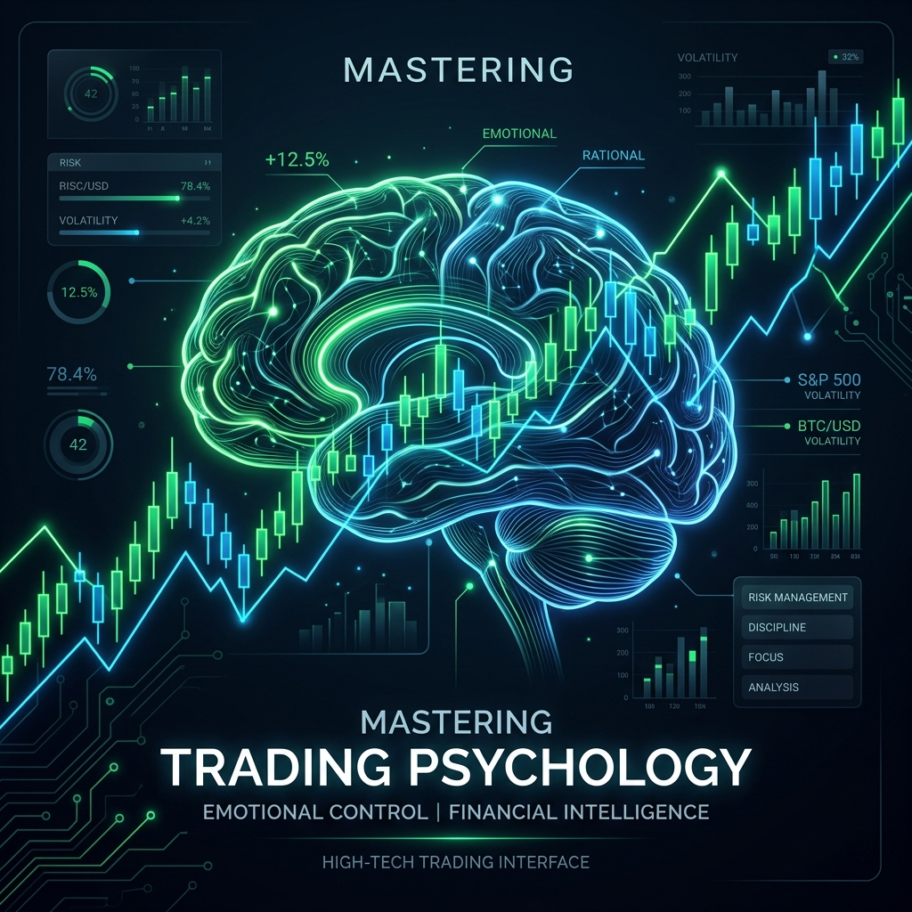

You can own the most advanced quantitative system, have access to institutional-grade execution speeds, and possess an unlimited trading account. Yet, if you lack emotional self-discipline, the market will eventually strip you of your capital. Trading is not an intellectual puzzle; it is a psychological battle against one's own evolutionary design.
In this guide, we dive deep into the behavioral biases that sabotage traders—focusing on Fear of Missing Out (FOMO) and Loss Aversion—and outline strategies to build an ironclad trading mindset.
"The market is a device for transferring money from the impatient to the patient. Your biggest enemy is not the market maker or the algorithms—it is the reflection in the mirror." — David Hayes, Senior Market Strategist
FOMO is the emotional response that triggers a trader to enter a position because they are watching a vertical price breakout and feel left behind. This bias is fueled by green candles and greed, often leading to entries at the absolute top of a trend cycle, just before institutional profit-taking triggers a reversal.
To conquer FOMO, you must accept that there will always be another trade. Implement a rule of **never chasing breakouts** that exceed your predefined entry zones. If a setup goes without you, let it go. Remind yourself that missing a profit is always superior to executing a bad trade and absorbing a realized loss.
Behavioral economists Daniel Kahneman and Amos Tversky established that human beings feel the pain of a loss roughly **twice as intensely** as the pleasure of an equivalent gain. In trading, this manifests as two destructive behaviors: widening stop losses to avoid realizing a loss, and cutting winning trades early to lock in tiny profits.
This "loss aversion trap" breaks your positive mathematical expectancy. To break the cycle, automate your stop losses at the moment of trade execution and treat stops as a cost of business. A hit stop loss is not a personal failure—it is simply a statistical data point in your broader trading business.
How well do you manage your emotions under fire? Complete our quick 4-question behavioral assessment to isolate your primary trading bias.
The human brain was not evolved to trade financial markets. Our instincts tell us to run when we see danger (selling at the bottom) and follow the pack (buying at the top). To survive, you must replace instincts with an analytical system.
This means writing down a strict trade execution plan before the market opens, specifying exact criteria for entry, exit, stop distance, and leverage. By turning trading into an assembly-line execution process, you remove emotional decision-making from the equation.
A trading journal is your mirror. Log every single trade with screenshots, entries, exits, and notes on how you felt. Did you enter due to FOMO? Did you exit early due to anxiety?
Reviewing these journals monthly allows you to identify recurring psychological patterns. Once you recognize that 80% of your losses stem from trading outside of your plan due to early morning FOMO, you can build explicit rules to prevent that exact behavior.
David focuses on behavioral market dynamics and hosts weekly psychology workshops for hedge fund managers and active prop traders.